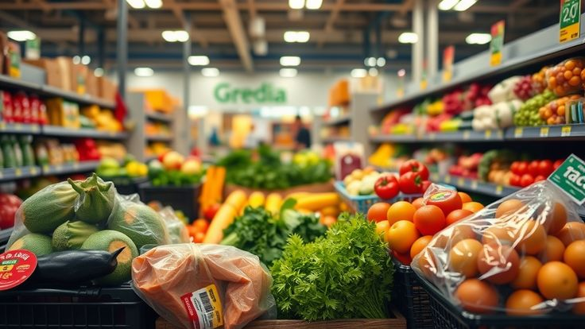

Conexões que alimentam comunidades
Mesa
Segura
Toneladas de comida boa vão para o lixo enquanto famílias passam fome.
Muitos mercados descartam alimentos ainda próprios para consumo por falta de uma ponte segura até quem precisa.
Como a solução funciona
Tecnologia
A tecnologia ajuda a organizar solicitações e registrar contribuições, respeitando a privacidade e a segurança dos dados.
Sensor de conservação
Mede temperatura e umidade e avisa quando o alimento precisa ser doado logo.
Aplicativo Mesa Segura
Mostra o estoque em risco e conecta o mercado a instituições próximas.
O que buscamos construir
Objetivos
Metas do projeto para reduzir o desperdício e ampliar o acesso a alimento seguro.
Mais doações
Facilitar que mais mercados e hortifrútis doem alimentos que ainda estão bons.
Menos desperdício
Reduzir o descarte de comida e levar o excedente a quem precisa.
Comunidade ativa
Promover colaboração respeitosa entre estabelecimentos e comunidade.
Quem participa
Público-alvo
O programa é para quem doa e para quem recebe. Escolha como quer participar.
Instituições
Recebem os alimentos e organizam a distribuição.
Mercados e empresas
Mercados, hortifrútis e feiras cadastram seus estoques.
Pessoas atendidas
Famílias de baixa renda recebem alimento seguro.
Para pessoas e famílias
Precisa de apoio?
Conte-nos como entrar em contato. Esta etapa registra somente seu interesse; ela não garante participação, recebimento de alimentos ou prazo de resposta.
Para quem deseja contribuir
Estabelecimentos participantes
Mercados, hortifrútis e outros estabelecimentos podem manifestar interesse em apoiar iniciativas locais. Uma eventual participação dependerá de avaliação, disponibilidade e regras aplicáveis.
O que a proposta oferece
Benefícios
Vantagens para quem doa, para quem recebe e para a comunidade.
Alimento seguro
Todo item doado é monitorado pelo sensor antes de chegar à mesa.
Bonificação (hipótese)
Cada doação poderia gerar créditos acumulados para o contribuidor, a validar com o programa.
Comunidade fortalecida
Menos comida no lixo e mais refeições na mesa de quem precisa.